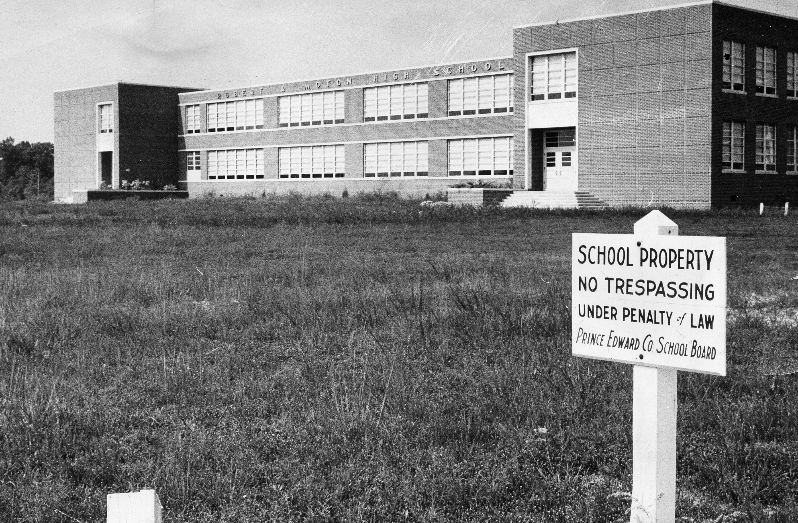

Farmville stood at the heart of the struggle over the meaning of freedom and equality in twentieth-century America. Young people played a defining role in this movement. In 1951, over 450 students, led by 16-year-old Barbara Johns, staged a walkout at the Robert R. Moton High School to protest the inadequate and overcrowded facilities African-Americans faced. Their action launched a 13-year legal fight that expanded equality for all Americans.
The Moton student strike resulted in the Davis v. Prince Edward case that the Supreme Court bundled together with four others in its landmark 1954 Brown v. Board of Education decision, which declared segregation in public education unconstitutional.
 (1).jpg)
However, the struggle for educational equality in Prince Edward did not end there. In 1959 county officials, under a court order to desegregate, instead chose to defund the public schools, effectively closing them. While white students were educated at a newly created private academy, school-age African-Americans who remained in the county were locked out. The public schools remained closed for five years as the legal battle to reopen them stalled in the courts.
By July 1963, local young people were frustrated by the slow pace of change and were inspired by the broader civil rights movement then sweeping the South. They wanted to do more than just wait for the courts. Advised by the Rev. L. Francis Griffin of First Baptist Church, they planned direct action protests and encouraged citizens to boycott discriminatory merchants. The protests resulted in the hiring of the first African-American employee downtown and helped lead to the opening of the Prince Edward Free Schools, with assistance from the U.S. Department of Justice, in September 1963. In 1964, the Supreme Court decision Griffin v. Prince Edward ordered the reopening of public schools.
 This walking tour guides you to sites in downtown Farmville significant to this history between 1951 and 1964. The two-mile route is designed to begin and end at the Moton Museum and takes you along Main Street, High Street, and Griffin Boulevard, but you can begin and end the tour at any point. Downtown Farmville has changed dramatically since the 1960s. We encourage you to explore its shops and cultural attractions as you engage with its fascinating past.
This walking tour guides you to sites in downtown Farmville significant to this history between 1951 and 1964. The two-mile route is designed to begin and end at the Moton Museum and takes you along Main Street, High Street, and Griffin Boulevard, but you can begin and end the tour at any point. Downtown Farmville has changed dramatically since the 1960s. We encourage you to explore its shops and cultural attractions as you engage with its fascinating past.
Sites on the tour are identified by a Civil Rights Walking Tour logo on the sidewalk.
Explore Map Explore Places
About this tour
This brochure and website is a joint collaboration between the Downtown Farmville Partnership, the Moton Museum, and Longwood University.
This project is supported by a grant from the Virginia Foundation for the Humanities (VFH).
The mission of the Virginia Foundation for the Humanities is to connect people and ideas to explore the human experience and inspire cultural engagement. VFH reaches audiences across the Commonwealth and beyond through Community Programs, Digital Initiatives, Scholarship, and the Virginia Center for the Book. For more information, visit VirginiaHumanities.org.